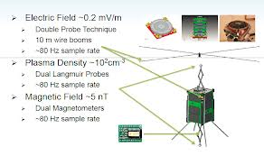
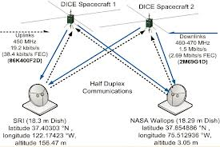
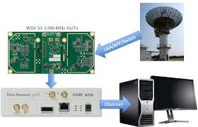
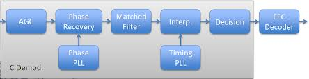
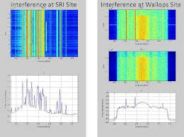
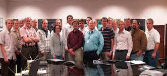

Dynamic Ionosphere CubeSat Experiment – High-Speed Satellite Ground Station
Authors：Dr. Jacob Gunther
Ettus Research Products Used：USRP N210，WBX
Institution：Utah State University in partnership with Level 3 Communications
Application Area：Satellite Communications
Challenge:
Implement a low-cost, high-performance spacecraft communications system for an Earth-science mission.
Solution:
The team needed an affordable, re-configurable communications solution to support the spacecraft-to-ground communications link. The USRP N210 was used to implement the ground-segment and allowed the team to adapt to changing interference conditions.
Introduction：
Utah State University was awarded a grant from the National Science Foundation to design, build, test and launch a Cubesat that would circle the Earth in a low-earth orbit and take measurements related to solar storms. This satellite is called The Dynamic Ionosphere Cubesat Experiment, or DICE. The satellite used a suite of instruments, including an electric field, plasma, and magnetic probes. The fusion of measurements made with these instruments provided unique insight into the way particles from solar flares interact with Earth's upper atmosphere. This information will help scientists gain a better understanding of how solar flares effect Earth's environment.
Most Cubesats use low-rate packet radios that operate between 1200 and 19200 bits per second. This constrains on the amount of scientific data that can be downlinked from the spacecraft. The requirements of the DICE scientific mission mandated a much higher data rate to retrieve all of the information required for complete analysis. The DICE team was faced with the challenge of designing a communications solution to increase the data throughput above 1 Mbps. This is a thousand-fold increase compared most existing communications systems used for Cubesat missions.
The Challenges
Developing this high-speed communications system does not come without a long list of challenges. From a technical standpoint, it is difficult to close a link at these higher data rates given the power limitation of a Cubesat power bus. Nominal operations require a high-gain dish at the ground station, and careful planning of downlink sessions over the ground station. The spacecraft radio also had to fit within the confined spaces of the Cubesat, and meet thermal dissipation requirements to assure reliable operation.
Additionally, there were also regulatory challenges posed by the project. Currently, there is no spectrum reserved for small scientific satellites so the DICE team was required to operate as a secondary user in a high-traffic radio band between 460 and 470 MHz with a high potential for radio interference. This secondary assignment mandated low-flux density of the transmitter signal at the Earth's surface, virtually guaranteeing that any terrestrial interferers would have significantly higher power ratios.
Last, but not least, there were few off-the-shelf solutions that could serve as the ground-station transceiver components while meeting the function and flexibility requirements of the system. Many of the solutions that could meet the requirements for this system cost upwards of $100,000, which was unacceptable for a program intended to prove space science can be performed in a cost-effective manner.
The Final System
Any spacecraft communications system, involves several components operating in harmony. The DICE spacecraft used the Cadet radio for Level 3 Communicatoins (L-3). This was a thoroughly tested piece of hardware that could operate reliably in space environments while fitting within the constraints set by the Cubesat bus. This unit transmitted data with Offset Quadrature Phase Shift Keying (O-QPSK) to minimize distortions caused by transmit amplifier non-linearity. The over-the-air datarate was 2.69 Mbps, which included frame overhead, forward-error correction, etc. The ultimate user data rate was 1.5 Mbps.
During the operational phase of the DICE mission, two ground stations were used. A facility at NASA Wallops field was used as the primary ground-station. This included an 18.29 meter dish. The other facility was located at the Stanford Research International 18.3 meter dish in Menlo Park, Calif. The ground-station used an Ettus Research USRP™ (Universal Software Radio Peripheral) to implement the uplink and downlink transceiver. The USRP hardware was connected to a PC that also provided a means to record all downlink data for post-processing.
 Figure 2 - DICE Communications System
The USRP and Satellite-Ground Communication
The USRP N210 was chosen to meet the demanding requirements for the mission's ground-station. Interfaced to a PC, the USRP device allowed the team to access the RF signals, demodulate, and decode the signals. During a downlink session, the USRP, PC, and a storage device was used to record RF samples, which would be post-processed using GNU Radio and C++. A block diagram of the receiver system can be seen in Figure 4.
Figure 3 - DICE Receiver Subsystem
During initial operations at Wallops field, the DICE team also encountered significant challenges associated with radio frequency interferers (RFI). The band of operation exposed the radios to a significant amount of push-to-talk (PTT) radio traffic. Due to the proximity of these interferes versus that of the distant satellite, the signal-to-interferer (SIR) ratio was very low, leading to poor downlink performance. The effect on the received spectrum is shown with spectral and waterfall plots.
Figure 5 - Interference at Ground Station
The software defined implementation using the USRP allowed the team to apply adaptive, narrow-band notching to reduce the effect of this interference. The resulting spectrum after interference mitigation was applied can be seen in the waterfall plot below. As such, the decision to implement the ground component using the USRP N210 software defined radio technology enabled the team to do more than save money on a tight budget.
Conclusion and Future Development
The DICE team was able to field a fully functional ground-component to operate the satellite and successfully downlink a significant amount of data, and established a new performance standard for Cubesat missions in doing so. With the help of the flexible USRP hardware, the team was able to deploy an affordable ground-station component. The re-configurability of the USRP-based system allowed the team to make adjustments during the operational phase of the mission, and adapt to a challenging RF environment. Without the USRP N210 SDR technology it may have taken significantly more effort and investment to achieve this success.
In the future, this ground-station concept will be re-used by a number of Cubesat communications teams, including the RAX team at the University of Michigan. This system offers significant advantages because a single radio can be used to implement several communications standards, negating the need for each team to develop its own radio implementation.
Figure 7 - DICE Cubesat Development Team